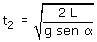
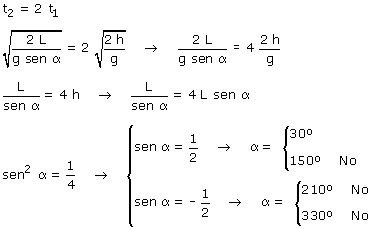

Tiempo que dura la caída vertical:

Tiempo que dura el recorrido a lo largo del plano:

El recorrido a lo largo del plano dura el doble que la caída vertical:

Evidentemente los ángulos descartados no pueden ser los de un plano inclinado